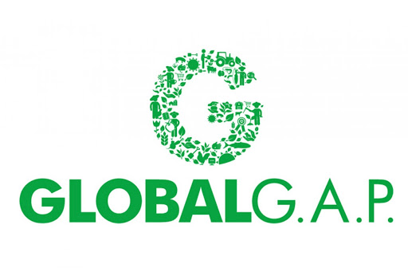
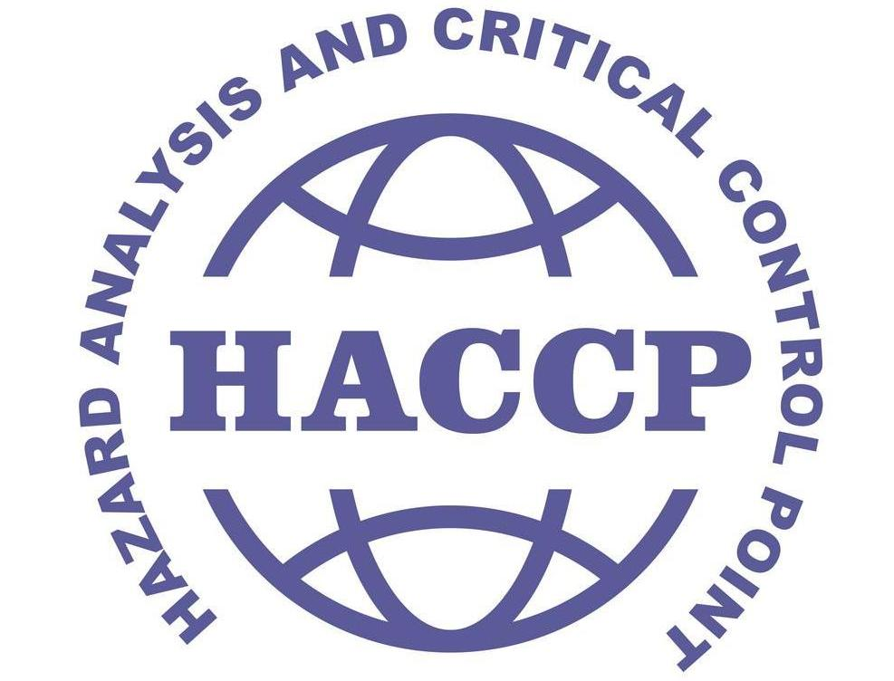

English
Deutsch
Home
Azienda
Prodotti
Clementine
Arance
Tacle
Mandarini
Calendario
Packaging
Certificazioni
Galleria
Contatti
Qualità
, certificata

GLOBAL G.A.P.
Il protocollo Global GAP definisce le buone pratiche agricole ( G.A.P. > Good Agricultural Practice ) relative agli elementi essenziali per lo sviluppo della best practice (migliore tecnica) applicabili ad aziende agricole, coltivazioni e prodotti della terra, allevamenti.
Il protocollo è stato creato dall'Eurep (Euro-Retailer Produce Working Group), che unisce alcune tra le più importanti catene commerciali europee, al fine di rispondere alle crescenti esigenze di sicurezza alimentare e di rispetto dell'ambiente.
Il primo standard pubblicato è stato l’EurepGAP Ortofrutta (Fruit and Vegetable), successivamente integrato dall’EurepGAPIFA (Integrated Farms Assurance), uno standard modulare per le attività di produzione agricola e allevamento. Oggi nella sua ultima versione denominata GLOBAL G.A.P.

H.A.C.C.P.
L'HACCP (Hazard Analysis and Critical Control Points) è un insieme di procedure, mirate a garantire la salubrità degli alimenti, basate sulla prevenzione anziché l'analisi del prodotto finito.
L'HACCP si basa sul monitoraggio dei punti della lavorazione" degli alimenti in cui si prospetta un pericolo di contaminazione, sia di natura biologica che chimica o fisica. È sistematico e ha basi scientifiche; la sua finalità è quella di individuare ed analizzare pericoli e mettere a punto sistemi adatti per il loro controllo (inteso nell'accezione di "regolazione").